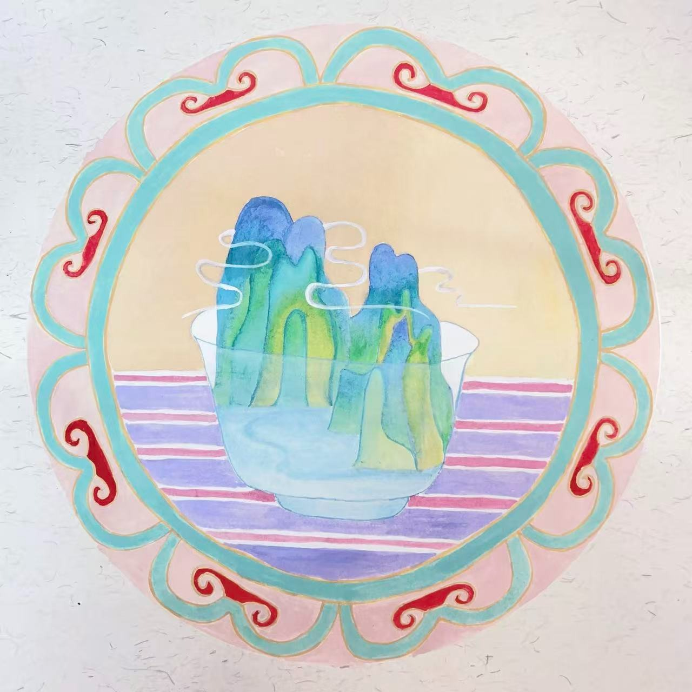
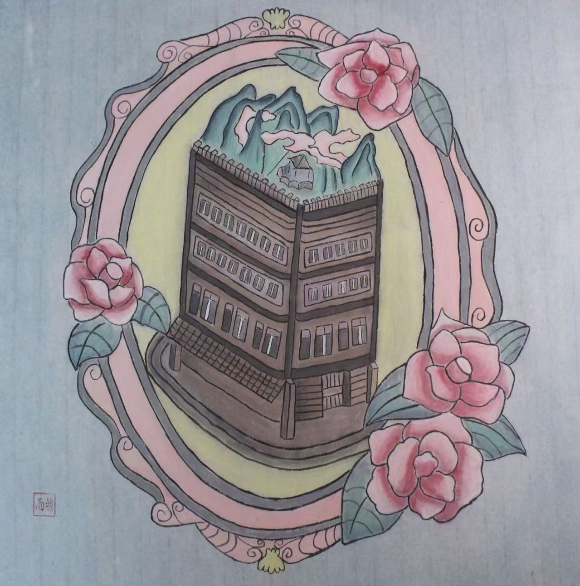
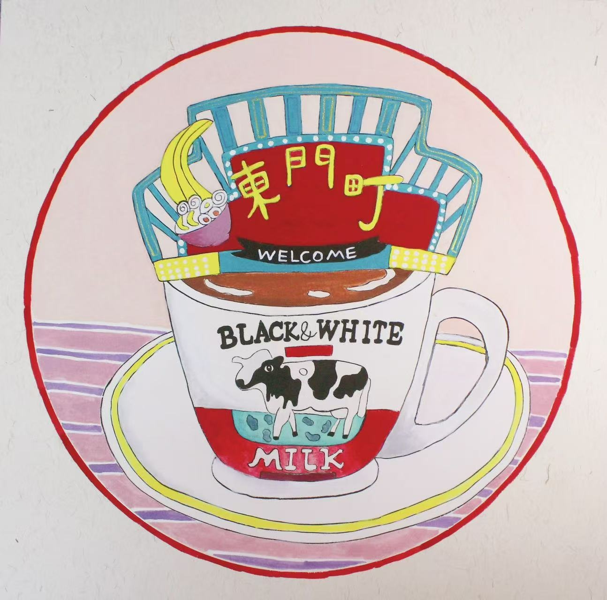
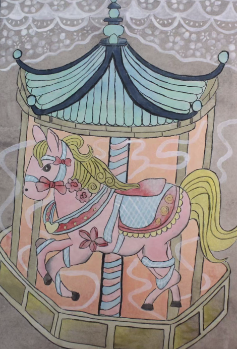
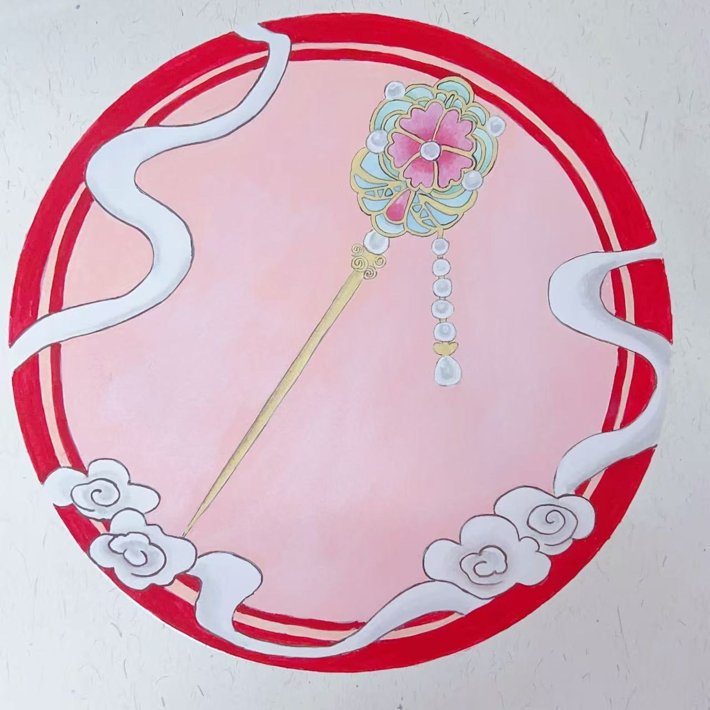
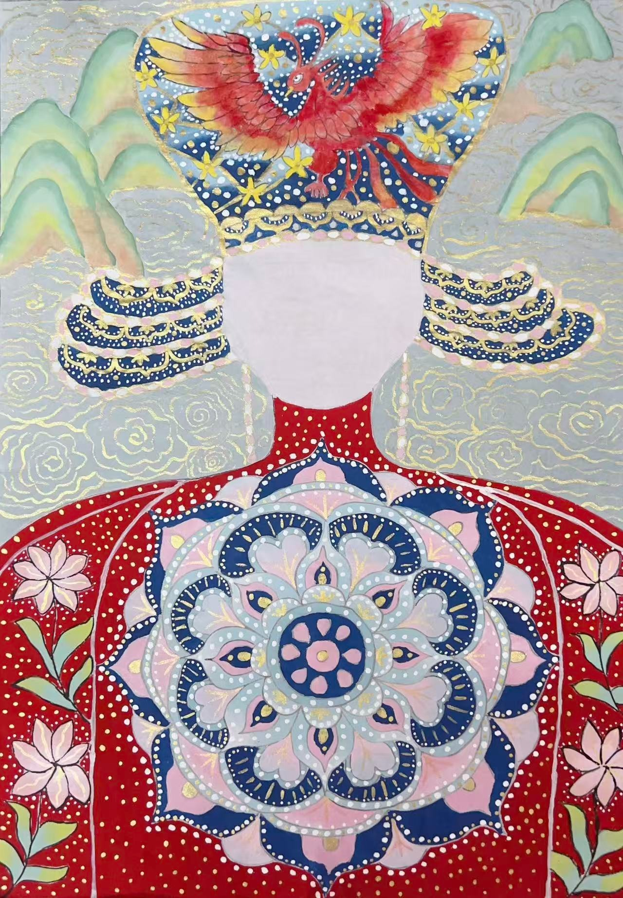
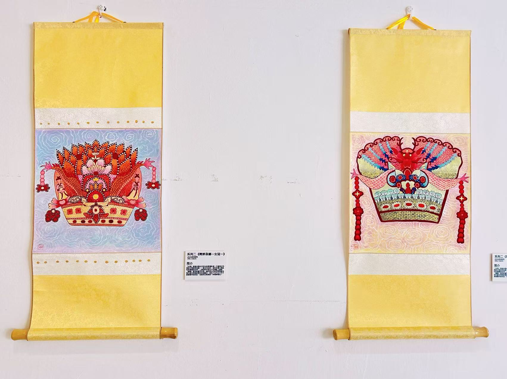
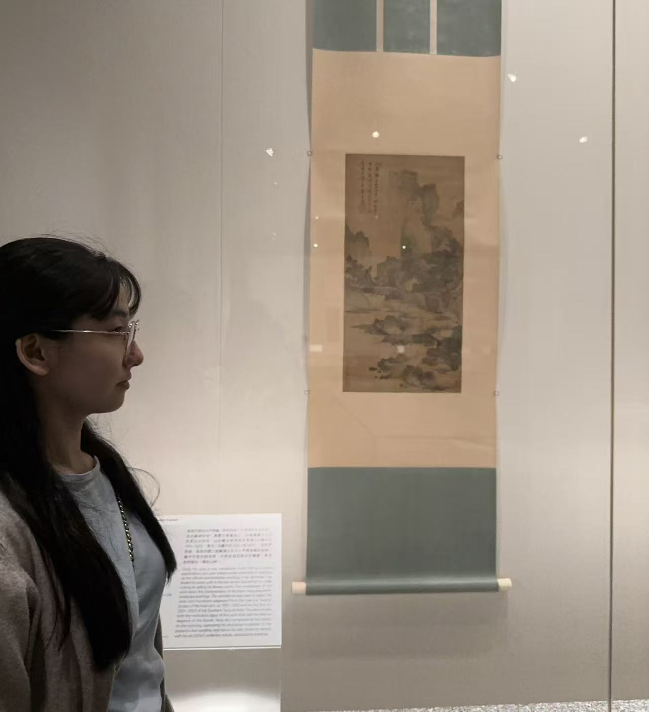

2023年 毕业于暨南大学本科，2024年 在香港大学专业进修学院修读设计课程， 2026年 入读香港教育大学研究生。
现生活于香港并从事艺术教育工作，曾获得伦敦英国绘画比赛奖项， 画作曾在英国伦敦与香港展出。曾被深圳万达广场邀请个展 「山有扶苏，隰有荷华」 个展。
擅长运用工笔绘画生活中的静物、所见所闻及研究古代仕女， 在传统风格里面加入一些现代元素，赋予其美好的思想感情。 用细腻的线条勾勒出物体的整体轮廓，用墨水晕染出不同的层次感和厚度， 用色彩赋予其情感的完美释放。最后将美融于画作事物之中， 以水墨的方式彰显「美学」韵味，塑造出富有现代人性的画面感， 又能产生一种恬静淡雅，又不失风韵的现代水墨画作。
北宋王希孟的《千里江山图》，绵延不绝的山峰，层次分明的色彩结构， 甚是让人心旷神怡。因而将其重峦叠嶂的山峰和明艳夏日色彩，融入自己的想象， 将峰峦嵌入茶杯中，通过清晰的山水景色，传递悠然自得的感受。
在繁华喧嚣的城市之中，给予自己一片静谧而舒适的净土，疗愈心灵。

童年时时常听家里长辈娓娓道来建筑之宏伟，结构之复杂。因而便将建筑融入镜中花的想象之中， 采用夏日轻盈、治愈系的柔和色调，展现「美」的内涵。
绘画时，常冥想如果镜框里的建筑顶层有美丽的山水景色，能让在喧嚣的繁华都市里生存的人 呼吸到新鲜的空气，欣赏大自然的山水，并从中寻找平静，享受大自然的包围， 在这片喧嚷的土地中找到一片属于自己的净土。

每逢炎炎夏日，香港人总是喜欢捧着香飘四溢的奶茶欣赏着维港美丽的海景， 拂面而来的海风抚平了因尘世纷扰的烦躁心情。
而在深圳东门老街的夏天，是活力与烟火气的缩影。购物与美食让人沉浸在都市热闹的画卷里。 无论是柔和惬意的海风还是霓虹闪烁的画卷，都让人卸下了疲惫的生活步伐。

有时夜间卧枕时，脑海里的记忆芯片会回拨童年的夏天：小时候常与家人在游乐场游玩旋转木马， 那时的无忧无虑，远是现实的物质难以比拟的。
白驹过隙，再忆往昔时，欢声笑语时常环绕耳畔。童年里纯真美好温暖的童话， 一直寄存于旋转木马的欢笑之中。

玉簪子选用玉石为原料，玉在传统文化中象征着美德与君子之风， 在《礼记》亦有中记载：“君子比德于玉，温润而泽仁也。”是古代仕女的饰物之一。
玉石在文化中享有崇高的地位，代表高雅、纯洁、坚贞不渝。 将古代的玉簪子结合现代工笔技法以及马卡龙柔和甜美的夏日色彩风格， 赋予玉簪带来「幸运」的意义。

古代后妃及诰命夫人的礼服，由饰有凤凰的帽子和美如云霞的披肩组成， 以示身份尊贵，荣耀显赫。
在现代，凤冠霞帔逐渐演变成了传统中式婚礼的标配，象征着喜庆、祝福和身份。 同时也是一种女性自我价值的美学表达、传统文化复兴的载体。 画作将传统的古代服饰和夏日的缤纷色彩结合在一起，现展出高雅、恬静的古今韵味。

女冠是指中国古代妇女的贵重礼冠。它通常分为两种主要应用场景： 一是古代后妃、命妇在重大典礼时所佩戴的头饰； 二是旧时平民女子在婚礼上搭配「霞帔」使用的豪华头饰。
画作将古代的传统饰物与现代夏日明亮的暖色系相融合， 表达了古代女子对于美丽繁华的向往，也是对古韵美的一种精神寄托。

